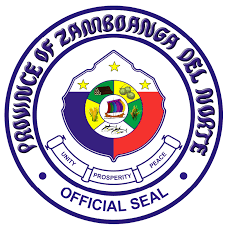

|  |
Province Of Zamboanga del norte |
Dapitan remained a part of the Zamboanga until 1952 when it was divided into two provinces: Zamboangas del Norteand del Sur. Dapitan became a chartered city on June 22,1963 by virtue of R.A. 3811 signed by President Diosdado Macapagal. Formally organized on November 12, 1963, Dapitan became the first chartered city in Zamboanga del Norte. Officially called the Shrine City of the Philippines, Dapitan City holds a special place in history as it once sheltered national hero Dr. Jose P. Rizal while on exile July 17, 1892 to July 31, 1896.
Dipolog City-The annual Sinulog Festival Celebration in Dipolog City featuring this year’s theme “Senior Sto. Niño Hiusaha Kami, Pit Señor.” (Señor Sto. Niño unite us, Pit Señor.) made the heart of the Dipolognons beats hard and wild with passion to the Lord Jesus as they celebrate his feast day. The activity was organized by the Catholic Church with a strong support from the City Government of Dipolog and the Provincial Government of Zamboanga del Norte. The feast day of Señor St. Niño, the Infant Jesus was started with a fluvial parade from Fisherman’s Village to the Dipolog Airport and back to Punta Corro. A solemn Eucharistic Mass took place at Sta. Cruz, a holy cross, at around 8:00 a.m. that was participated by most public officials and believers of the Christian Church.
Kinabayo Festival which is celebrated every July 25 in Dapitan City Zamboanga del Norte Philippines celebrate a mysterious and colorful pageant re-enacting the Spanish-Moorish wars, mainly the Battle of Covadonga where the Spanish forces under General Pelagio took their last stand against Saracan. They were able to overturn the tide through the miraculous spirit of St. James. The addition of local color and modernism has made this annual celebration a popular attraction which brings thousands of tourists to the Dapitan City.
P'gsalabuk is a Subano term that means “togetherness”. In the festival, the City Government of Dipolog aims to showcase the myriad interplay of culture: Muslim, Lumad and the varied and diverse culture of the settlers from all over the Philippines as well as the Spanish, Chinese, American and other Asian culture that have been so meticulously woven and shaped into what is known as the unique Mindanao Tri-people Culture. The festival will feature street dancing in the main avenue of Dipolog City. This will then culminate in a cultural presentation depicting dances involving the different types if people in Mindanao. The concept is “Unity in diversity among the tri-people” because as the objectives state, it aims to promote peace and harmony among the three people who call Mindanao their home. Literally translated the festival’s title means: “togetherness among three people with diverse culture.”
The drums beat, the sun flared, the crowd gathered and the dancers marched forward with their fancy, shiny festival dresses glinting in the hot afternoon light of Dipolog City. Zamboanga del Norte’s Hudyaka Festival commenced! Hudyaka which means revelry in Bisaya is an annual festival that is attended by contingents from the whole Zamboanga del Norte province. The festival celebrates the founding of the province and the cities and municipalities of Zamboanga del Norte usually send in contingents to compete. With prizes in six figures, there’s no reason for them not to. The festival is now on its 8th year and is hosted in rotation by the towns of Zamboanga del Norte. This year, it’s Dipolog City’s turn to host the Hudyaka Zanorte and we were lucky to be invited to witness the festivities.